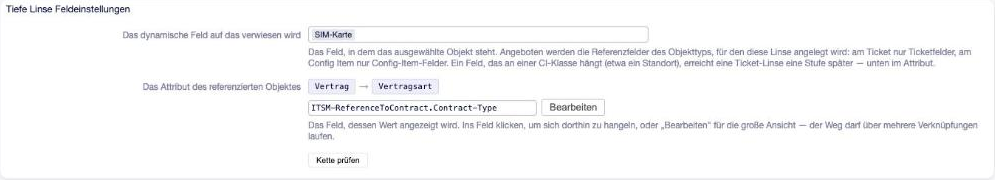

Tiefe Linse¶
OTOBO bringt eine eigene Linse mit, und sie reicht genau ein Objekt weit: Ein Referenzfeld zeigt auf etwas, und ein Attribut dieses Ziels wird angezeigt. Das genügt für „der Standort des verknüpften Servers“, aber nicht für
Arbeitsplatz → Mobilgerät → SIM-Karte → Vertrag → Vertragstyp
So sieht eine CMDB aus, sobald Config Items aufeinander verweisen. Die Tiefe Linse geht so weit, wie der Pfad reicht. Mit einem Pfad aus nur einem Schritt verhält sie sich wie die Standard-Linse. Sie funktioniert an Tickets und Config Items, in den Agentenmasken und im Kundenportal.
Ein Feld einrichten¶
Admin → Dynamische Felder → Feld vom Typ Tiefe Linse anlegen. Der Dialog hat dieselben zwei Zeilen wie die Standard-Linse.


Abb. 11 Oben das Referenzfeld, unten der Weg bis zum angezeigten Wert, darunter der Knopf Kette prüfen.¶
- Das dynamische Feld, auf das verwiesen wird
Eine Auswahl der Referenzfelder des Objekttyps, für den die Linse angelegt wird: an einer Ticket-Linse nur Ticketfelder, an einer Config-Item-Linse nur Config-Item-Felder aller Klassen. Ein Feld, das an einer Config-Item-Klasse hängt, etwa ein Standort, steht nicht in der Auswahl einer Ticket-Linse. Sie erreicht es einen Schritt später in der unteren Zeile.
- Das Attribut des referenzierten Objektes
Der Weg von dort zum Wert. Diese Zeile wird ausgewählt, nicht getippt: Ein Klick öffnet die Auswahl. Referenzfelder führen ein Objekt weiter (markiert mit
›), jedes andere Feld beendet den Weg, ebenso Attribute des Objekts selbst (@Number,@Class…). Kann eine Referenz auf mehrere Klassen zeigen, fragt die Auswahl, welcher die Kette folgen soll. Das verkürzt nur die Liste. Zeigt die Referenz später auf eine andere Klasse, bleibt das Feld leer, und ein Hinweis nennt die Klassen, für die die Kette nicht gilt. Tippen geht weiterhin, mit Punkten oder Pfeilen (SimCard.Contract.ContractType).
Kette prüfen¶
Der Knopf geht die Kette an echten Objekten ab. Er listet die möglichen Startobjekte mit ihrem Ergebnis: Objekte mit Wert stehen oben, die anderen sind ausgegraut und nennen den Grund. Die Klasse hat das Feld nicht, eine Referenz ist nicht gesetzt, oder der Wert ist leer. Eine Zeile fasst zusammen, wie viele einen Wert liefern. Ein Klick auf ein Objekt zeigt den ganzen Weg bis dahin, wo er endet. So lässt sich ein leeres Feld ohne Raten erklären: Ein Konfigurationsfehler sieht anders aus als fehlende Daten.
Das Feld schreibt zurück¶
Wie die Linse von OTOBO: Ein in einer Bearbeitungsmaske geänderter Wert wird in das Objekt am Ende der Kette geschrieben, das auf dem Bildschirm nirgends zu sehen ist. Ob das Feld änderbar ist, legt die Maske fest. Zeigen Sie es deshalb in einer Anzeige oder setzen Sie es in der Maskenkonfiguration auf schreibgeschützt.
Beispiel: Vertragstyp am Arbeitsplatz-Ticket¶
Ein Ticket verweist auf einen Arbeitsplatz. Das Team soll den Typ des Vertrags der SIM-Karte des Mobilgeräts an diesem Arbeitsplatz sehen, vier Schritte entfernt.
Admin → Dynamische Felder → Ticket → Tiefe Linse anlegen, Name
WorkplaceContractType.Obere Zeile: das Referenzfeld
Arbeitsplatzdes Tickets.Untere Zeile: hineinklicken und
Mobilgerät ›,SIM-Karte ›,Vertrag ›,Vertragstypwählen.Kette prüfen: Die Liste zeigt, welche Arbeitsplätze einen Vertragstyp liefern. Ein Arbeitsplatz ohne Mobilgerät ist ausgegraut, der Grund nennt das fehlende Mobilgerät. Das liegt an den Daten, nicht an der Konfiguration.
Speichern und das Feld in die Ticket-Ansicht aufnehmen, oder schreibgeschützt in eine Bearbeitungsmaske, da das Feld in den Vertrag zurückschreibt.
Grenzen¶
Die Tiefe Linse arbeitet einwertig: Eine Referenz mit mehreren Objekten führt zum ersten.
Sie lässt sich nicht innerhalb eines Sets verwenden, und eine Linse kann nicht auf eine andere Linse zeigen. Referenzfelder innerhalb von Sets bietet die Auswahl nicht an.
Im Kundenportal wird eine Änderung in der Historie des Config Items dem technischen Portal-Benutzer zugeschrieben.
Die Länge des Pfades begrenzt die Einstellung
DeepLenseMaxDepth, siehe Einstellungen.